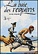
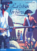
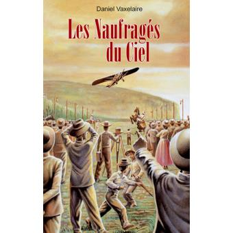
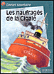
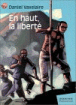
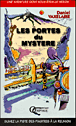

Bastien PaixdeCoeur s'ennuie : la petite île
où il habite, avec ses parents et quelques poignées de colons hauts
en couleur, manque singulièrement d'animation. Jusqu'à ce matin où
le garçon découvre un forban proprement épinglé dans le bureau de
son père, un sabre entre les deux épaules. Ce sabre appartient au
propre père de Bastien, qui occupait jusqu'à ce jour les hautes
fonctions de la Compagnie des Indes…
La dédicace de l'auteur : Dans le microcosme de la petite
colonie perdue, en effet, les rumeurs vont bon train et les
rancoeurs macèrent, ce qui vaut à PaixdeCoeur d'être emprisonné et,
très vite, condamné à être pendu. Bastien est convaincu de
l'innocence de son père, mais les adultes ne l'écoutent pas. Du
moins, les adultes ordinaires. En revanche, les marginaux comme Yonn
Pitre, l'ancien pirate, et Alcindor, l'esclave affranchi, acceptent
d'aider le garçon dans son enquête. Il y a aussi Isabelle et
Marianne, si belles toutes les deux, si différentes (l'une est
blonde, l'autre noire comme la nuit) et si proches (elles ont toutes
deux des caractères, disons, toniques). Et il y a surtout la petite
soeur de Bastien, nez pointu, esprit caustique, un fléau de première
classe. Entouré de ces aides parfois maladroites, Bastien
parviendra-t-il à faire éclater la terrible vérité (et à éviter le
sabre de l'ignoble Manuel) avant que son papa ne monte à l'échafaud
? Voilà la petite histoire, simple mais pas simplette, que j'ai
voulu écrire. L'île ressemble à ce qu'était, il y a trois siècles,
celle où j'habite, La Réunion. Et les gens sont de toutes les
époques : qui ne connaît pas quelques hommes et femmes courageux,
qui ne connaît pas aussi des lâches ? Quel garçon n'a jamais hésité
entre deux filles (et vice-versa) ? Et quel grand frère n'a pas, un
jour, maudit sa petite soeur ? (Daniel Vaxelaire)
{% fnac "requins", "https://livre.fnac.com/a15957002/Daniel-Vaxelaire-La-Baie-des-requins" %}
 Présentation de l'éditeur : Que faire quand on a onze ans, sur une île perdue au beau milieu de l'océan ? Poursuivre pirates et forbans... Bastien a déjà prouvé son courage en la matière ! Mais découvrir le trésor avant eux… c'est une autre paire de manches. Surtout quand on a pour unique indice une feuille couverte de signes illisibles, et pour seule aide… des filles ! Qui sera le plus rusé ?
{% fnac "forbans", "https://livre.fnac.com/a1447054/Daniel-Vaxelaire-Tresor-des-forbans-Le" %}

4e de couverture : 1929, aéroport du Bourget : l'avion Farman 192 AJJB s'envoie. A son bord, trois héros avec ce rêve fou, ce pari insensé : rallier la Réunion par les airs. Arriveront-ils à bon port ? Farman résistera-t-il aux tempêtes du continent africain ? La mer épargnera-t-elle les aventuriers ?
C'est une histoire vraie : celle de l'incroyable aventure de ces trois aviateurs qui furent les premiers à relier La Réunion au reste du monde,en 1929. Pour cela, il a fallu traverser toute l'Afrique et affronter destempêtes, des taupinières et même l'ombre d'un lion ! Et le voyage deretour est encore plus incroyable. Plutôt que faire parler les hommes, toujours trop sérieux selon, l'auteur a préféré laisser à l'avion le soin de dérouler son aventure. Et un Farman192, ça ne manque pas d'humour.
{% fnac "Farman192", "https://livre.fnac.com/a869314/Daniel-Vaxelaire-Naufrages-du-ciel-Les" %}
Quatrième de couverture : En passant par l'Île Maurice, Madagascar, les Comores, la Réunion et les Seychelles, l'océan Indien est riche de contes et de légendes de la tradition. Souvent drôles, parfois émouvants, ces récits sont toujours divertissants.
{% fnac "15contes", "https://livre.fnac.com/a1277005/Daniel-Vaxelaire-Quinze-contes-de-l-ocean-indien" %}
 Mot de l'éditeur : Décembre 1929, la Cigale vogue tranquillement vers l'île de la Réunion. A son bord, Pierre et ses deux frères découvrent une inquiétante cargaison d'essence. Une nuit, un incendie se déclare dans les cales et le cargo devient une véritable poudrière. Un terrible compte à rebours commence alors pour les passagers. Comment les trois garçons, à l'heure du chacun pour soi, vont-ils s'en sortir ?
{% fnac "lacigale", "https://livre.fnac.com/a7711786/Daniel-Vaxelaire-Les-naufrages-de-la-cigale" %}

La dédicace de l'auteur : En haut la liberté. Le titre est presque un
cri de guerre. C'est ainsi que je l'ai voulu : comme un slogan,
une invitation, presque un ordre. Bien sûr, le jeune lecteur
d'aujourd'hui n'est pas confronté à des aventures aussi
éprouvantes que celles de mes héros (quoique, si on glisse de
quelques centaines de kilomètres vers l'est ou le sud, on
découvre des adolescents qui ne s'amusent pas tous les
jours...). Mais si, au sortir de ce livre, ce jeune lecteur se
dit qu'il doit lui aussi conquérir «sa» liberté - qui peut être
de ne pas manger ceci ou cela, de ne pas obéir aveuglement aux
modes ou aux ordres - je serai un auteur comblé. ...
Mais mon
ambition première est infiniment plus modeste : simplement
raconter une histoire. Elle est d'hier et d'ailleurs ?
Peut-être, et pourtant elle est de toujours : qui oserait dire
que le racisme a disparu ? La bête n'est pas morte et c'est pour
cela qu'il faut aller chercher sa liberté tout en haut, au bout
de longs efforts. Bon courage, jeune ami(e) : la vie est belle
si on sait vers quel horizon pointer son bateau (Daniel Vaxelaire)
{% fnac "hautliberte", "https://livre.fnac.com/a15956999/Daniel-Vaxelaire-En-haut-la-liberte" %}
Ti'Tango et Ti'Rock sont des tangues, des petits animaux qui ressemblent à des hérissons et qui vivent dans les forêts à La Réunion et à Madagascar. Ensemble, ils partent à la recherche des mystérieux bilimbis. Dans leur quête, les deux amis font des rencontres amusantes et amicales, mais finiront-ils par trouver ce qu'ils cherchent ?
{% fnac "bilimbis", "https://livre.fnac.com/a1116176/Daniel-Vaxelaire-La-chasse-aux-bilimbis" %}

Caroline et Frédéric se sont inscrits pour un rallye-surprise qui doit leur faire découvrir les plus beaux sites de la Réunion. Ils auront leur nom dans le journal s'ils gagnent !
mais qui sont ces mystérieux concurrents habillés de vestes noires ? Une aventure dont vous êtes le héros, la première du genre à la Réunion, à lire à partir de 10 ans.
{% fnac "Portesdumystère", "https://livre.fnac.com/a299760/Daniel-Vaxelaire-Les-Portes-du-Mystere" %}